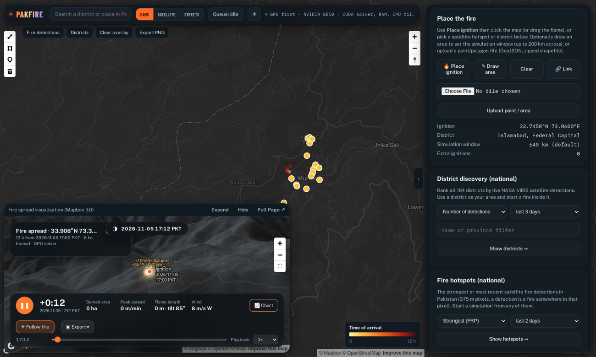
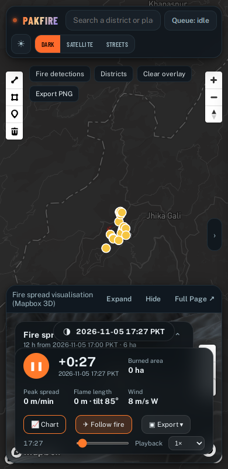
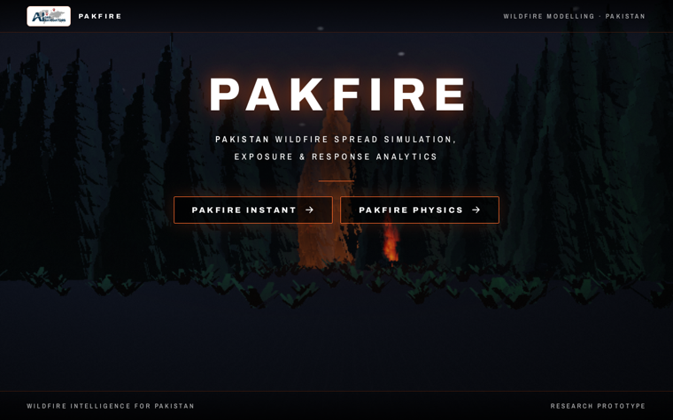
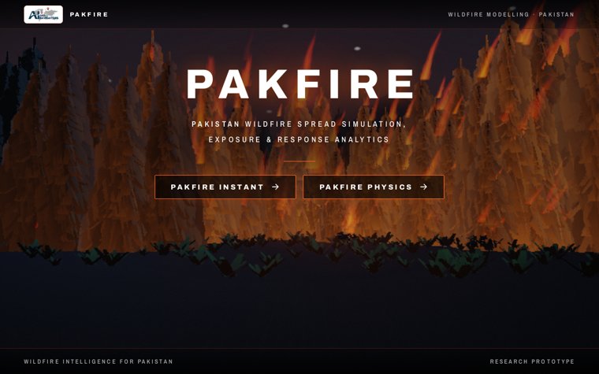
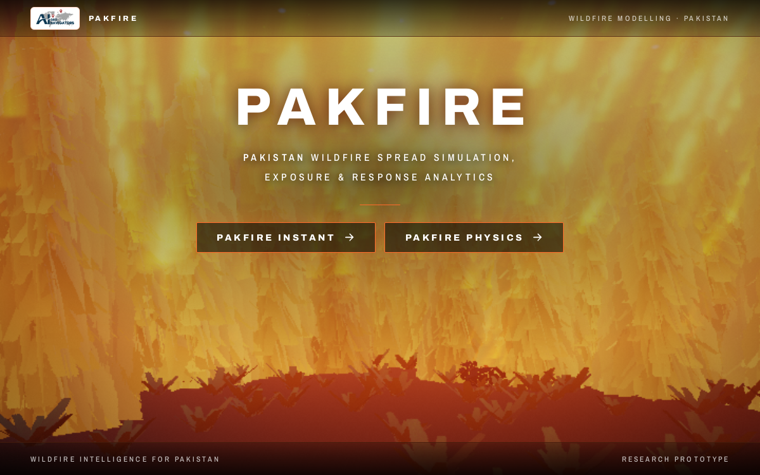

This edition documents the rebuild and everything added since the first edition of 24 October 2026. It documents a rebuild: an earlier version of PAKFIRE (23 October 2026) used a simplified single-class Rothermel implementation and a CPU-only solver. On 23 October the project folder was updated with the FIRELAB Margalla platform, whose Albini/Scott & Burgan Rothermel module was verified against an independent implementation (pyretechnics). PAKFIRE was then rebuilt on that module.
| Area | State |
|---|---|
| Surface fire NEW | Albini multi-class Rothermel with Scott & Burgan (2005) and Anderson (1982) fuels, reused from pkfire/vendor/rothermel.py rather than re-implemented (Ch. 4). |
| Fuel moisture NEW | Hourly 1/10/100 h dead moisture with a 48 h lead-in and a rain-wetting term; live moisture and grass curing from NDVI (Ch. 7). |
| GPU solver NEW | CUDA kernel (via CuPy) that solves the same minimum-travel-time problem as the CPU heap solver, with identical arrival times on test grids (Ch. 9, 18). Order of preference: GPU, then data in RAM, then CPU. |
| Ensemble NEW | 24-member perturbed ensemble producing a burn-probability map and an area range (Ch. 14). |
| GIS and sharing NEW | Hourly spread contours as GeoJSON, suggested fuel break, share link, run deletion (Ch. 17). |
| Exposure NEW | People, hospitals, schools, grid stations and power lines exposed to a run, with arrival times (Ch. 17); data-status page; re-run with a new seed. |
| Wind compass, danger class NEW | Clickable compass for the manual wind direction and a fire-weather danger class in the context panel (Ch. 17). |
| Interface NEW | Rebuilt in the SAILAB/LANDLAB layout (first a 2D map over an animated 3D pane with right-hand panels; since 7 November 2026 the map-first layout, below), with four tier tabs, run history and comparison (Ch. 16, 19). |
| Tiers NEW | Tier 1 instant footprint, Tier 2 spread run, Tier 3 ensemble and burn probability, Tier 4 mitigation with fuel breaks and treatments (Ch. 16). |
| Discovery NEW | District ranking and hotspot list from live NASA satellite detections, weather and fuel context, live monitoring with automatic scenarios and webhooks (Ch. 17). |
| Reports NEW | PDF incident report and batch report, run comparison, scoring against an observed perimeter (Ch. 18). |
| 3D scene NEW | SAILAB-style scene with four display modes, flame glow, animated flame sprites, sparks, embers, optional smoke, ignition flare, spread axis with arrows, wind streaks, timeline chart, probe, PNG/WebM export and the follow camera (Ch. 20). |
| Correction | The length-to-breadth ratio of the fire ellipse used wind in mph with coefficients defined per m/s, which makes fires roughly twice too elongated. Found by comparing with the FIRELAB engine and fixed in both solvers on 24 October (Ch. 24, bug 8). |
| Finding | For a single run on the tested scenes the CPU heap solver was faster than the GPU kernel (Ch. 9.4). GPU remains the default at the owner's instruction; the CPU path is a transparent fallback. |
| Thermal guard | None. The owner removed it on 23 October 2026; PAKFIRE applies no temperature throttling or pausing. |
| Accuracy work, 26 October NEW | Albini spotting, crown fire (assumed canopy values), fuel map v2 with CGLS forest type, assimilation of satellite detections, roads, an own GPU mass-conserving terrain wind model (replacing the unusable Windows WindNinja, which was deleted), burn-out and suppression proxies, each tested on the same 527 events (Ch. 23.3). The fuel map made the clear difference; the terrain wind a small consistent one; roads and crown fire none; burn-out and suppression were worse. |
| Validation and calibration NEW | 527 satellite-observed fires (2024–2026) scored against VIIRS footprints and MODIS burned area; five bounded rate settings fitted on 2024–2025; held-back 2026 results and a circle baseline reported honestly (Ch. 23). A "Rates" setting selects the calibrated or the uncalibrated physics. |
| SAILAB interface update, 20 November 2026 NEW | Matched to SAILAB's new interface: the drawer is split into five tabs (Fire, Runs, Impact, Mitigation, Discover); the toolbar has mode buttons (Instant, Physics, Manual); the map shows Pakistan only; the start page is a long scrolling page (the 3D forest fire as hero, the Sherani 2022 fire from satellite data, an intensity scale, capabilities, modes, manual); and an illustrated 25-page User Manual is served at /manual (Ch. 19, 19.1, 19.3). |
| Start page and Instant, 7 November 2026 NEW | The start page (/) is a 3D night forest in which a small fire burns on two trees; the buttons PAKFIRE Instant and PAKFIRE Physics make it spread from tree to tree over the whole view and open /instant or /app (Ch. 19.1). PAKFIRE Instant is a new page: place a fire, pick a weather scenario, see the footprint in about a second (Ch. 19.2). The sun-lit "3D lit" basemap of the 3D scene was removed at the owner's request. |
| Map-first interface, 7 November 2026 NEW | The page was rebuilt to follow SAILAB's current interface: a full-screen map, a floating toolbar (place search, basemap switch, job queue, light/dark theme), a floating side drawer, the 3D fire view as a floating card that can fill the screen, and a welcome card (Ch. 19, 20.7). Two small routes were added for it, /places/search and /api/queue (Ch. 21). |
| Canopy height, 31 October 2026 NEW | The Meta/WRI 1 m canopy height map was downloaded for Pakistan (556 tiles, 71 GB), reduced to a 30 m national raster, and used to give crown fire a canopy base height and bulk density cell by cell. Scored on all 1,464 events it changed 41 of them and no score; it ships off (Ch. 10.3, 23.5). |
| Tests | 41 tests pass (7 November 2026; 30 physics and 11 route tests, 62 s). They cover Albini spotting against the FIRELAB reference, crown fire with fixed and with per-cell canopy values, assimilated ignitions, the road and suppression factors, the terrain wind model, terrain moisture, ensemble widths, the PBS lookup and the routes. |
| Done since | On the owner's go-ahead the heavy checks were run on 24 October: the 21 physics and route tests pass, the 3D scene was reviewed in a real browser, and the solvers were re-timed (Ch. 9.4, 22). Calibration and validation against observed fires remain open (Ch. 23, 28). |
PAKFIRE answers one question for any point in Pakistan: if a vegetation fire starts here, under this weather, where does it go, how fast, and what does it threaten? It does so by cutting a local window (default 80 km × 80 km at 50 m) out of the national datasets, mapping land cover to fuel models, computing hourly fuel moisture from the preceding 48 h of weather, solving the fire-front arrival time with Rothermel rates and an elliptical fire shape in every cell, and animating the result on a 3D satellite map whose camera travels with the fire front.
Everything the model reports is either a measurement, a published formula applied to real inputs, or an explicitly labelled approximation. The approximations that matter most are the land-cover-to-fuel crosswalk (Ch. 6), the simplified spotting scheme (Ch. 10) and the uniform wind (Ch. 26).
| Layer | Technology | Role |
|---|---|---|
| Web server | Flask, one threaded process (pkfire/app.py), port 8020 | Starts runs in a worker thread (one at a time, guarded by a lock), serves run files and the FIRMS and weather helpers. |
| Scene builder | rasterio, pyproj, SciPy (pkfire/terrain.py) | Windowed reads of the national rasters, warping to the local grid, terrain derivatives, fuel crosswalk. |
| Fuel physics | NumPy (pkfire/fuels.py, pkfire/vendor/rothermel.py) | Rothermel/Albini rates per fuel and hour; wind and slope coefficients. |
| Moisture | NumPy (pkfire/moisture.py) | Hourly dead fuel moisture with lead-in and rain wetting. |
| Solvers | CuPy RawKernel / CUDA (kernel_gpu.py); Numba (kernel_cpu.py) | Fire-front arrival time. solver.py chooses GPU first and falls back to the CPU on any GPU failure, recording the reason. |
| Run orchestration | pkfire/run.py | Ignition snapping, weather, tables, solve, ensemble, export, events, camera track. |
| Discovery, reports | GeoPandas, WeasyPrint, Pillow (geo.py, overlay.py, report.py, instant.py) | Districts and FIRMS, map overlays, PDF reports, the instant footprint. |
| Interface | Mapbox GL JS 3.6 and Mapbox Draw 1.4.3, HTML canvas (web/pk/app.html, web/pk/viewer/) | Main dashboard and the 3D scene (an iframe, as in SAILAB). |
On the owner's instruction compute goes to the GPU first, then to arrays held in RAM, then to the CPU. In practice: the solver runs as a CUDA kernel on device arrays; all rasters are held in host RAM as NumPy arrays and uploaded once per run; the Numba CPU solver is used only if the GPU is absent, fails, or is requested explicitly (backend: "cpu"). The scene load (disk reads of the national rasters) is I/O and CPU bound and is the dominant cost of a typical run (Ch. 9.4). No thermal governor exists in the code.
A global lock allows one simulation at a time so that a shared server is not overloaded. Other requests (status, run files, FIRMS, weather) are served while a run is in progress. Job state is held in memory; a server restart forgets running jobs but keeps finished runs on disk.
| Path | Contents |
|---|---|
pkfire/fuels.py | Crosswalk targets, wind adjustment factors, table builder. |
pkfire/moisture.py | Dead fuel moisture model. |
pkfire/terrain.py | Scene builder and fuel crosswalk. |
pkfire/kernel_cpu.py, kernel_gpu.py, solver.py | The two solvers and the backend choice. |
pkfire/weather.py | Open-Meteo with MET Norway fallback and disk cache (data/raw/weather). |
pkfire/run.py | One run, ensemble, exports. |
pkfire/app.py | Flask application: pages, jobs, discovery, monitoring, reports. |
pkfire/geo.py, overlay.py, instant.py, report.py | Districts and FIRMS; 2D overlays and static maps; Tier 1; PDF reports. |
web/pk/app.html, web/pk/viewer/ | Main dashboard; 3D scene page, script and stylesheet. |
data/runs/<id>/ | meta.json, arrival.bin, intensity.bin, optional prob.bin. |
Fire Simulation Model - FIRELAB legacy (archived 2026-11-07) | The earlier Margalla FIRELAB platform (its scripts, web pages, tests, documents, reference video); moved out of the project folder on 7 November 2026. PAKFIRE keeps only pkfire/vendor/rothermel.py and spotting.py from it. |
All inputs are on the shared drive or free public services; none is synthetic.
| Dataset | Location / provider | Used for |
|---|---|---|
| SRTM elevation, 29.16 m | 3. Raster Data/DEM_SRTM/pakDEM/Pak_srtm.tif (EPSG:32642, 52 189 × 64 499 px, tiled 128×128) | Elevation, slope, upslope azimuth, forest-type split at 1000 m. Read as a window, warped bilinearly to the local grid. Gaps are filled from the nearest valid cell. |
| ESRI 10 m land cover 2025 | 2. ESRI_LandCover Data/lc2025/lc2025Pakistan.tif (EPSG:4326, 139 879 × 194 180 px, overviews 2–16) | Fuel crosswalk. Classes present: 1 water, 2 trees, 4 flooded vegetation, 5 crops, 7 built area, 8 bare ground, 9 snow/ice, 11 rangeland. Nearest-neighbour; cloud and no-data cells take the nearest valid class. |
| MODIS NDVI, 1 km | 3. Raster Data/MODIS_NDVI_1km/ (599 composites, 2000 to 14 April 2026) | Rangeland fuel class, fuel continuity, live fuel moisture and grass curing. The composite chosen is the newest within 16 days of the day of year of the ignition. |
| Hourly weather | Open-Meteo (forecast and archive APIs); MET Norway locationforecast as a fallback for the next 8 days | Temperature, relative humidity, 10 m wind speed and direction, precipitation. Cached on disk because the shared server has a small daily call budget. |
| Active fires | NASA FIRMS VIIRS S-NPP near-real-time, key in .secrets/firms_map_key | Satellite detections for the last 1–5 days, clipped to the Pakistan boundary, cached 30 min. A detection can be used as the ignition point. |
| Roads and other national vectors (PostGIS) | SimCity database on port 5455, read-only role; pk.roads holds 1,113,962 OSM road lines with class, surface, width and one-way attributes (a window query takes 0.03–0.3 s) | Not used by the model yet; reserved for evacuation and access routing (Ch. 28). |
| Fire stations | data/external/fire_stations.geojson: 91 features (49 tagged fire_station, the rest named Rescue 1122 or Fire Brigade) read from the OSM Pakistan extract on the server (Iliyan/CFI/Pluvial/data_external/pakistan-latest.osm.pbf) after the Overpass service failed for a country-wide query | Not used by the model yet. OSM coverage of fire stations in Pakistan is sparse, so any response-time estimate would need an official station list. |
| Districts | 4. Vector Data/Pakistan Boundary/…/District_Boundary.shp (164 districts, EPSG:4326) | District of an ignition, discovery ranking, joining satellite detections to districts and clipping them to Pakistan. |
| Canopy height, 1 m (reduced to 30 m) | Meta/WRI high-resolution canopy height map, public AWS open data s3://dataforgood-fb-data/forests/v1/alsgedi_global_v6_float/chm (quadkey tiles, EPSG:3857, 8-bit metres); reduced to data/national/canopy_height_pakistan.tif (Ch. 10.3) | Optional per-cell canopy base height and bulk density for crown fire (profile key canopy, off). The 71 GB of source tiles were deleted after the raster was built; tools/download_meta_chm.py fetches them again. |
| Basemap and 3D terrain | Mapbox (dark style by default; satellite-streets and streets imagery on request; terrain DEM v1), token in .secrets/mapbox_token | Visual context only; the model uses SRTM, not the Mapbox terrain. |
Coverage limits: latitude 23.5–37.2, longitude 60.8–77.9. Ignitions outside are rejected with a message.
PAKFIRE does not re-implement Rothermel's equations; it calls pkfire/vendor/rothermel.py, the module written and verified for FIRELAB (it matches the pyretechnics reference implementation in the FIRELAB test suite). The model is Rothermel (1972) with Albini (1976) size-class weighting. Six fuel classes are carried: dead 1 h, 10 h, 100 h, dead herbaceous, live herbaceous, live woody. Imperial units are used internally, as in the original equations, and converted to m/min at the boundary.
Here σ is the characteristic surface-area-to-volume ratio (1/ft), β the packing ratio, w_n the net fuel load and M_x the moisture of extinction. The live moisture of extinction follows Rothermel's eq. 88, M_x,live = max(2.9 W (1 − M_f,dead/M_x,dead) − 0.226, M_x,dead), with W the ratio of dead to live fine-fuel loading weighted by exp(−138/σ) and exp(−500/σ).
For Scott & Burgan dynamic models the live herbaceous load moves into the dead herbaceous class as the grass cures: fully cured at 30 % live herbaceous moisture, fully green at 120 %, linear in between, i.e. green fraction = clip(M_herb / 0.9 − 1/3, 0, 1).
Where these numbers come from. They are not stored or fitted: they are the output of the Rothermel (1972) equations with the Albini (1976) corrections, implemented in pkfire/vendor/rothermel.py (FIRELAB), evaluated for the published fuel-model parameters of Anderson (1982) and Scott & Burgan (2005): fuel loads by size class, surface-area-to-volume ratios, bed depth, heat content, moisture of extinction. The table below is that code run at one fixed moisture so that the models can be compared; at run time the rates are recomputed every hour from the modelled moisture. The only tuned quantities are the per-group multipliers in Ch. 23.
No-wind, no-slope rates for each fuel in PAKFIRE with dead 1 h moisture 4.1 % (constant 34 °C, RH 20 %), live moisture from NDVI 0.30:
| Fuel model | R0 (m/min) | I_R (BTU/ft²/min) |
|---|---|---|
| FM1 short grass | 1.59 | 871 |
| FM2 timber with grass understory | 0.98 | 3774 |
| FM3 tall grass / reeds | 1.82 | 3242 |
| FM5 brush | 0.46 | 3136 |
| FM6 dormant brush | 0.70 | 2155 |
| FM9 long-needle pine litter | 0.34 | 2688 |
| GR2 dry-climate grass (S&B) | 0.52 | 1232 |
| GS2 dry-climate grass-shrub (S&B) | 0.39 | 2298 |
| TU1 timber-grass-shrub (S&B) | 0.08 | 1788 |
| TL8 long-needle litter (S&B) | 0.30 | 3607 |
The 10 m wind is reduced to midflame height with a wind adjustment factor (WAF) per fuel (Andrews 2012): 0.40 for grass and crop stubble, 0.36 for grass-shrub, 0.35 for brush, 0.44 for tall grass, 0.28 for TU1, 0.22–0.25 for needle-litter fuels. The wind in ft/min used in the Rothermel wind factor is U10 (m/s) × WAF × 196.85.
The wind and slope contributions are added as vectors, wind along the direction the wind blows towards and slope along the upslope azimuth:
With no wind and no slope the head direction falls back to the wind direction and the fire is circular.
The fire shape in each cell is an ellipse with the ignition at the rear focus (Richards 1990). The length-to-breadth ratio follows Anderson (1983) from the effective wind speed U in m/s:
pkfire/adjust.py)A calibration profile and four optional adjustments are applied to a scene before the solve, by the application and the validation alike. All except the first three groups default to off in the shipped profile, because validation showed no gain (Ch. 23.3).
pkfire/roads.py): OSM motorway, trunk, primary, secondary and tertiary roads from the PostGIS pk.roads (read-only role) are rasterised (all touched cells) and multiply the spread rate of the cells they cross by 0.05–0.6 by class (motorway 0.05, trunk 0.08, primary 0.12, secondary 0.25, tertiary 0.5), raised to a calibrated weight; if the database cannot be reached the barrier is one everywhere and the scene records it. A road is far narrower than a cell, so this is a statistical slowing, not a break (breaks are Ch. 16.4).wfield): the mass-conserving wind model of Ch. 5.6, applied as a per-cell speed ratio and direction rotation, raised to the fitted strength (1.0, the physical value).pkfire/windfield.py)FIRELAB used WindNinja (USDA Forest Service) for terrain wind, but the copy on the server was the Windows build and could not run here; it was deleted (851 MB) and a model of the same kind was written for PAKFIRE and solved on the GPU. It follows Sherman (1978) and the WindNinja papers (Forthofer et al. 2014): start from the reference 10 m wind with a logarithmic profile in height above ground (roughness length from land cover: 0.001 m water to 0.9 m forest and built land), then change it as little as possible, in the least-squares sense, so that the 3-D flow has no divergence and no air passes through the ground:
φ is solved on a Cartesian grid (240 m horizontal, 40 m vertical, top 700 m above the highest terrain; cells below the terrain are solid) with open lateral and top boundaries (φ = 0 beyond them), by Jacobi-preconditioned conjugate gradients with a fused CUDA kernel for the operator (NumPy fallback). The ratio of the adjusted to the initial speed and the change of direction at the second level above ground (40–80 m) are returned for one wind direction (neutral flow, so they do not depend on speed) and interpolated to the fire grid. The run uses the dominant weather direction rounded to 22.5° and caches the solution on disk.
The ratio α. With α = 1 (Sherman's neutral value) a 400 m hill of 2.5 km width raises the crest wind by only 4 %, far below the 22 % that Jackson & Hunt (1975) linear theory gives for it. α was therefore set to 0.35, where the crest speed-up is 21 % (theory 22 %); this is a tuned parameter, chosen against theory on an idealised hill, not against measured winds. Tests: flat terrain gives ratio 1.000; divergence falls by about 4 orders of magnitude (the residual is 4.5·10⁻⁵ of the initial); GPU equals CPU; mirrored winds give mirrored fields; the crest speed-up matches theory within 0.08; the flanks speed up less than the crest; the wind far from the hill is unchanged; the kernels apply the rotation and the speed ratio. Cost: about 9 s for the largest case (±40 km window over 4,500 m of relief, 13 M cells, 570 iterations) and 1–3 s for typical ones, once per place and wind direction.
Limits. A diagnostic model: no thermal slope and valley winds (a large part of real mountain winds in the afternoon and night), no stability or inversions, no flow separation or lee rotors (the lee is as fast as the windward side in this model), staircase terrain at 40 m vertical resolution, one wind direction per run. It cannot be compared with WindNinja on the same terrain here, because WindNinja could not be run.
chan)The terrain wind (5.6) uses Sherman's α, which sets how freely the flow may adjust horizontally compared with vertically. A small α makes the flow go around and along terrain (channelled by valleys and deflected around ridges) instead of over it, which is what stable air does at night and in light wind; a larger α lets it go over. With chan > 0 the neutral α = 0.35 is lowered to as little as 0.35 × 0.4 using a stability index in 0–1: 1.0 at night and 0.6 by day, times 1/(1 + (U/8 m/s)²) because strong synoptic wind overrides the terrain, averaged over the hours of the run (microclimate.channel_strength; adjust.chan_alpha). Fields are cached per α. On a Margalla scene α = 0.15 changes the wind direction by 7° on average and the speed ratio by 0.11 relative to α = 0.35 (the median ratio falls from 0.85 to 0.75 because more air is diverted around the terrain).
Validation. On the 292 development events the objective was 0.129 for chan = 0, 0.5 and 1.0 and 0.128 for 1.5: no measurable effect. A curvature-based "valley axis" rotation tried first (weights above 0.3 on 7 % of cells, rotations of a few degrees) had the same null result and was removed. Not modelled: thermal up-slope and down-valley winds, which are a large part of real valley flow; this is a stability parameterisation of a diagnostic model, not a boundary-layer model.
The 10 m ESRI land-cover class and the 1 km NDVI are converted to a fuel model and a continuity factor. This is the least certain input of the model: no field fuel inventory exists for Pakistan, and the FIRELAB roadmap already records that the choice for sparse woodland changes Margalla burned areas by a factor 3–13 (docs/ROADMAP.md in the FIRELAB legacy archive).
| Land cover | Fuel model | Rule |
|---|---|---|
| Trees, elevation ≥ 1000 m | TL8 long-needle litter | The chir and blue pine belt; litter fire. |
| Trees, elevation < 1000 m | TU1 timber-grass-shrub | Scrub forest and plantations. |
| Flooded vegetation | FM3 tall grass | Reeds. |
| Crops | GR2 grass, continuity 0.7 | Standing or harvested stubble, partly irrigated. Burns, but slowly and unevenly. |
| Rangeland, NDVI > 0.40 | FM5 brush | |
| Rangeland, NDVI 0.20–0.40 | GS2 grass-shrub | |
| Rangeland, NDVI 0.10–0.20 | GR2 grass | |
| Rangeland, NDVI < 0.10 | does not burn | True desert: the fuel bed is too discontinuous to carry fire. |
| Bare ground, NDVI ≥ 0.20 | GR2, continuity 0.15 | Sparse grass only; otherwise bare ground does not burn. |
| Built, water, snow/ice | does not burn | Settlements are not fuel in this model; fire cannot cross them except by embers. |
The continuity factor multiplies R0. For rangeland it is clip((NDVI − 0.05)/0.25, 0.1, 1). The thresholds in the table came from a first test in which sparse desert scrub and bare ground burned thousands of hectares in the Thar; they are judgement, not calibration (Ch. 24, bug 4).
The first crosswalk sampled the single 10 m land-cover pixel nearest each cell centre and split forest by elevation only. Two changes were validated (Ch. 23):
data/national/cgls_lc100_pakistan.tif, 18 MB): needleleaf classes (111, 121) give TL8 long-needle litter, broadleaf classes (112, 114, 122, 124) give TU1; forest of unknown or mixed type keeps the elevation rule (TL8 at or above 1000 m, TU1 below). CGLS is a 2019 map at 100 m and mislabels some forest.A canopy-height layer was also sought. On 26 October the ETH 10 m global canopy-height map had moved behind a DOI landing page and could not be downloaded automatically, so canopy base height and bulk density were fixed assumptions (Ch. 10.2). On 31 October the Meta/WRI 1 m map was found to be public on AWS open data, downloaded for Pakistan and reduced to a national 30 m raster; it is wired into crown fire as an option that is off because it showed no gain (Ch. 10.3, 23.5). Per-cell live fuel moisture from MODIS vegetation-moisture composites was not added: the available NDMI cube on the server covers a sub-area, and live moisture only affects the live herbaceous load of a few fuels, so it is not expected to matter for the validation events.
Equilibrium moisture content (Simard 1968) for each hour from temperature T (°F) and relative humidity RH (%):
Each dead class relaxes towards the EMC with its time lag τ = 1, 10 and 100 h: m ← m + (EMC − m)(1 − e^(−1/τ)) every hour, starting from the EMC at the first hour. The simulation starts 48 h after the first weather hour, so the 1 h and 10 h classes carry the recent weather history; the 100 h class is only partly conditioned.
When hourly rain r exceeds 0.05 mm, each class moves towards saturation: m ← m + (M_sat − m)·(1 − exp(−(r − 0.05)/8))/14. This is the rain branch of the WRF-SFIRE moisture model as adopted in FIRELAB (docs/background/accuracy_improvements.md), with the saturation capped at 60 % instead of WRF's 250 %, which lies far outside the range where a spread model is valid. Moisture is bounded between 2 % and 60 %. Coefficients are not locally calibrated.
The mean NDVI of the burnable cells in the window sets a greenness g = clip((NDVI − 0.15)/0.45, 0, 1). Live herbaceous moisture = 0.30 + 0.90 g and live woody moisture = 0.70 + 0.60 g (fractions). One value applies to the whole window. This is a proxy, not a measurement, and it is the reason PAKFIRE carries an NDVI input at all; FIRELAB's Sentinel-2 NDII scheme is not available nationally.
pkfire/microclimate.py, tmoist)The weather is for one point, but dead fine fuel is hotter and drier on a sunlit slope and cooler and moister in shade, under canopy and higher up. For each cell the module estimates the difference in equilibrium moisture (Simard) from a flat open reference at the weather point, averaged over up to ten sampled daylight hours: solar position (NOAA formulae); beam exposure from the slope normal and a cast-shadow test against horizon angles from a 3 km search in 8 directions; fuel surface temperature Tf = Tair + 20 K × exposure × (1 − canopy shade), with shade 0.7 for trees and 0.3 for flooded vegetation; air temperature lowered 6.5 K/km above the weather point and dew point 2 K/km (so relative humidity at the fuel is 100 e / es(Tf)). The 20 K excess is an assumption (published values are 10–25 K), clear sky is assumed because cloud cover is not available, and the shade fractions are judgement. The moisture difference is turned into a spread-rate multiplier per fuel from the Rothermel rate at moisture raised or lowered by it (1 h fuel by the difference, 10 h by 0.6, 100 h by 0.3) and applied to the continuity field, so it is a first-order correction at the dryness of the fire's busiest hours, not a time-resolved moisture model. In the Margalla test scene it gives moisture differences of −1.7 to +2.3 percentage points (1st to 99th percentile) and rate multipliers of 0.89–1.37.
Validation. The objective on the development events was 0.129 without it and 0.128, 0.127 and 0.125 at strengths 0.5, 1.0 and 1.5: slightly worse, not better. The effect acts on slopes and canopy gaps at 60 m, which the 375–500 m satellite truth cannot resolve, so the test cannot confirm it either way; see Ch. 23.4 for the decision taken.
The fire front is found as the earliest arrival time t(x) at every cell (Finney 2002). From a cell i that ignites at t_i the fire reaches each of its 16 neighbours j (8 adjacent plus 8 knight-move cells, which removes most grid-direction bias) after
where d_ij is the distance between cell centres, θ_ij the angle between that direction and the head direction of cell i, and R_i the elliptical rate of Section 5.4 evaluated with the fuel, slope and weather of the hour in which cell i ignited. Cells that do not burn (rate zero) block the fire. The scheme gives exact earliest arrival times for the discretised problem; the weather dependence is handled by evaluating each cell once, at its own ignition time, which is exact when the weather changes slowly compared with the time a cell takes to burn.
The CPU solver is Dijkstra's algorithm with an indexed binary heap (kernel_cpu.py, Numba). Run time is proportional to the number of burning cells, not the size of the grid.
Dijkstra is sequential, so the GPU uses an exact parallel equivalent (kernel_gpu.py). The run is cut into one-hour bands, because the weather changes hourly. Within a band:
A cell with arrival below the band end can only be improved by cells with an earlier arrival, all of which take part, so after convergence those arrivals are exact; this is why the result equals Dijkstra's. To avoid launching over the whole grid every pass, the kernels run on the bounding box of the cells already reached, widened by the farthest possible advance in one hour (200 m/min × 60 min / cell size). Positive floating-point arrival times order like integers, which allows atomicMin on the bit pattern.
Ember random numbers come from a counter-based hash of the cell index and the seed, so GPU spot fires are statistically but not bit-for-bit equal to those of the CPU solver, which uses a sequential generator. With spotting off, the two solvers agree to floating-point precision (Ch. 22).
solver.simulate uses the GPU when CuPy reports a device. If the GPU path raises any error in automatic mode it falls back to the CPU and records gpu_error in the run metadata, which the viewer displays; requesting backend: "gpu" explicitly does not fall back.
Re-measured on 24 October 2026 (after the length-to-breadth correction) on the DGX Spark (GB10, CUDA 13), whole runs through run.run, each backend run twice (the first GPU call compiles the kernels). The machine was shared and busy, so times vary:
| Case (grid) | Burned | GPU solve (1st, 2nd) | CPU solve (1st, 2nd) | Scene load |
|---|---|---|---|---|
| Balochistan grass, 72 h, ±100 km, 100 m (2030 × 2040) | 270,534 ha | 4.2 s, 2.2 s | 1.9 s, 0.5 s | 5.8 s |
| Punjab crops, 48 h, ±60 km, 75 m (1625 × 1633) | 101,926 ha | 0.67 s, 0.58 s | 0.41 s, 0.40 s | 2.4 s |
| Sindh, 24 h, ±40 km, 50 m (1606 × 1614) | 29,930 ha | 0.62 s, 0.38 s | 0.31 s, 1.22 s | 2.1 s |
| Margalla forest, 24 h, ±25 km, 50 m (1018 × 1022) | 296 ha | 0.11 s, 0.09 s | under 0.01 s | 1.5 s |
The first version used an invented distance rule that needed 800 kW/m, which low-elevation forest never reaches, so forest fires never spotted. It was replaced on 26 October 2026 by the Albini (1983) maximum spotting distance already implemented for FIRELAB (pkfire/vendor/spotting.py; the two implementations agree to 0.5 m in a test), with Schroeder (1969) ignition probability:
For every cell as it is finalised, in a fuel that sheds firebrands and with intensity above 100 kW/m, an ember is thrown with probability 2·10⁻⁴ · min(I/1000, 1); its distance is min(D_max, D_max · 0.35 · exp(0.6 g)) with g ~ N(0,1), its direction downwind ± 0.17 rad (σ), and it starts a new fire if the target is burnable and it passes the Schroeder test; the landing time is the flight time plus 3 min. The coefficients (A, B) are Albini's Table 4 values for the nearest fuel type: conifer litter (TL8, FM9) 69.6 and −0.818; timber-grass (TU1) 129 and −1.238; brush and grass-shrub 83.9 and −1.04. Grass and crop fuels carry no coefficient and never spot. The 2·10⁻⁴ rate and the 0.35 distance fraction are assumptions that were not calibrated.
Why a heuristic at all. Albini (1983) gives only the maximum distance a firebrand can travel and still be burning; his model does not say how landings are spread between the fire and that distance, and no Pakistani spot-fire data exist to fit one. The log-normal with median 0.35 × Dmax, the ember rate and the ±0.17 rad direction spread are therefore judgement; they are not derived from the physics. Sensitivity was tested: switching spotting on or off left every validation score unchanged, so the numbers matter little for the scored events, but they are the least-founded part of the engine.
Effect: forest fires now spot (across 40 forest events, 5 spot fires in 4 events), but in the 527 validation events the change left every score unchanged, because most events burn grass, crops and rangeland, and the low-elevation forest fuel TU1 still rarely reaches 100 kW/m. This is a correctness change, not a measured accuracy gain.
Pine fuels (TL8, FM9) can burn as crown fire. A surface fire whose intensity reaches the Van Wagner (1977) initiation intensity I₀ = (0.010 · CBH · (460 + 25.9 · FMC))^1.5 (kW/m) becomes a crown fire if the Cruz et al. (2005) active crown rate R = 11.02 · U₁₀^0.90 · CBD^0.19 · exp(−0.17 · M₁) (U₁₀ in km/h, M₁ the 1 h dead moisture in percent) is at least the critical rate 3/CBD (Van Wagner). Then the spread rate is the larger of the surface and crown rates (capped at 200 m/min) and 150 · R kW/m is added to the fireline intensity for the burned canopy fuel. Canopy base height is taken as 3 m (an effective height including shrub and sapling ladder fuel; a 5 m canopy over bare litter never ignites in this model), bulk density as 0.10 kg/m³ and foliar moisture as 100 %, giving I₀ = 875 kW/m. These are assumed stand values, not measured for Pakistan, and crown fire is not validated: in a test TL8 fire the crown phase starts at 20 m/s wind and 5 % humidity (surface 1,238 kW/m becomes 36,900 kW/m at the 200 m/min cap), and a 10 m/s Margalla fire burned 62 ha as crown fire. Runs report the crown-fire area and a warning. Crown fire did not change the validation scores for the same reason as spotting. A variant that takes canopy base height and bulk density from a measured canopy map is described in 10.3.
Source and processing. The Meta/WRI high-resolution canopy height map (a model trained on aerial lidar and applied to very high resolution satellite imagery; global, created 17 December 2024, updated 6 October 2025) is stored as 8-bit metre tiles of 65,536 × 65,536 pixels at 1.19 m in EPSG:3857. tools/download_meta_chm.py fetched the 556 tiles that cover Pakistan from the public bucket (71 GB, no failures). tools/build_canopy.py reduced every tile in 32 × 32 blocks (about 38 m) to the mean height and the 90th-percentile height of the 1 m pixels (cached in data/cache/canopy_tiles/, 4.4 GB), then warped the reduced tiles into one GeoTIFF: data/national/canopy_height_pakistan.tif, EPSG:4326 at 1/3600° (about 31 m), 48,600 × 61,560 cells, two 8-bit bands (1 = mean height, 2 = 90th percentile, whole metres), 512 × 512 tiles, deflate, overviews 2–16, 607 MB. The scene builder reads it as it reads the other national rasters (terrain.load_canopy, terrain.canopy_for_scene). A tiled GeoTIFF was chosen over Zarr because every other national raster is read this way and a window read of a scene needs no new reader.
Check against known places (10 km windows, mean of the cell values): Murree 4.3 m mean and 7.7 m 90th percentile with trees up to 32 m; Swat/Kalam 4.0 and 7.0 m (up to 42 m); Margalla 2.8 and 5.1 m; Lahore 0.9 and 2.9 m; Gilgit 0.5 and 1.2 m; Karachi 0.2 and 0.7 m; Thar 0.1 and 0.2 m. Forest and farmland and desert separate as expected. The mean is rounded to whole metres, so a cell with a mean under half a metre reads zero.
How it enters crown fire (fuels.canopy_crown, profile key canopy; canopy = 0 keeps the fixed values of Ch. 10.2). The map gives height only, so the two crown-fuel properties are derived, and these relations are assumptions, not fitted to Pakistani stands:
Only the fuels that already carry crown fire (TL8 and FM9, the pines) are affected. Both kernels (CPU and GPU) now read the initiation intensity and bulk density per cell (fuels.crown_cells); without canopy data they fall back to the fixed per-fuel values, so default behaviour is unchanged. A test covers the formula, the fall-back and a kernel run in which canopy-free cells carry no crown fire.
Result. Scored on all 1,464 events it changed 41 and no average score (Ch. 23.5), so it ships off. Limits of the map itself (from its WRI data page): the imagery was collected at varying dates and atmospheric conditions, so the map is not a single-time snapshot; there is no field validation for trees over 25 m; terrain slope may bias heights.
Intensity is stored per cell at the moment the cell is finalised and drives the colour brightness of the flaming front and the flame-length chart.
Hourly weather comes from Open-Meteo: the forecast API for dates within about 80 days before to 15 days after today, the archive API otherwise. If Open-Meteo is unreachable and the run lies within the next 8 days, MET Norway's locationforecast is used instead, interpolated to hourly values (wind direction as a vector). Responses are cached on disk keyed by request.
The weather starts 48 h before the start time so that dead fuel moisture is conditioned. If the source cannot supply history (for example MET Norway, which is forecast only, or manual weather) the first hour is held for 48 h with no antecedent rain, and the run metadata states this under conditioning. Manual weather holds one wind, temperature and humidity constant for the whole run and has no rain.
The weather gives one 10 m wind per hour for the whole window. The mass-conserving terrain wind (Ch. 5.6) turns it into a per-cell speed ratio and direction; with the chan setting it is solved with a smaller Sherman alpha at night and in light wind, so that flow goes around and along terrain instead of over it (Ch. 5.7).
With ensemble = 24 the run is repeated 24 times with perturbations that stand for forecast, fuel and model uncertainty. The widths were chosen on 28 October 2026 from the validation events (tools/ensemble_widths.py; stored in calibration.json as ensemble_widths):
| Quantity | Original (assumed) | Shipped |
|---|---|---|
| Wind speed (all hours) | × N(1, 0.20) | × N(1, 0.40) |
| Wind direction (all hours) | + N(0, 12°) | + N(0, 24°) |
| Dead fuel moisture | × N(1, 0.15), limited to 0.6–1.5 | × N(1, 0.30), same limits |
| Mean NDVI (live moisture) | + N(0, 0.03) | + N(0, 0.06) |
| Spread-rate error (all fuels) | none | × exp N(0, 0.9) NEW |
| Ember random seed | different for every member | |
The burn probability of a cell is the fraction of members that burned it by the end of the run, stored as a percentage; the viewer shows it as a yellow-to-red layer. The summary gives the 10th, 50th and 90th percentile of burned area. The main (non-ensemble) run is the unperturbed one.
For 50 events per split (development events before 2024, test events from 2024) that MODIS maps at 50 ha or more, 16-member ensembles were run under the shipped calibration with the four original widths multiplied by a common scale (0 to 3) and with a log-normal spread-rate error added (0 to 0.9). Three scores were computed against the MODIS burn mask: the Brier score of the burn probability over the cells within 3 km of the observed or any simulated burn (lower is better); the coverage, the share of events whose MODIS area lies inside the members' 10–90 % range (a reliable 80 % range gives 0.80); and the area PIT, the mean rank of the MODIS area among the member areas (0.5 is unbiased).
| Held-back test events 2024–2026 | Brier | Coverage | Area PIT |
|---|---|---|---|
| No perturbation | 0.117 | 0.00 | 0.43 |
| Original widths | 0.106 | 0.20 | 0.42 |
| Original widths × 3 | 0.089 | 0.35 | 0.43 |
| Original widths + spread-rate 0.9 | 0.070 | 0.62 | 0.51 |
| Shipped: widths × 2 + spread-rate 0.9 | 0.069 | 0.64 | 0.53 |
| Product | Definition |
|---|---|
arrival.bin | uint16 arrival time in 1/8 min (65535 = not reached) on the north-up export grid. |
intensity.bin | uint8 fireline intensity / 40 kW/m, capped at 255 (10.2 MW/m). |
prob.bin | uint8 burn probability in percent (ensemble only). |
| Area series | Burned hectares at every 30 min. |
| Spread-rate series | Maximum head rate (m/min) among cells ignited in each 30 min. |
| Flame-length series | Byram flame length for the most intense cell ignited in each 30 min. |
| Spread axis | Every 15 min, the mean position of the cells ignited in that interval whose distance from the ignition is in the top 20 %; connected as a polyline with cumulative length and the SRTM elevation at each point (down-sampled to at most 80 points). This is the "head of the fire" path, shown with timed waypoints. |
| Key events | Ignition; first spot fire; fastest growth (the 30 min interval with the largest area increase, located at its fastest cell); first arrival at the window edge; first arrival within 300 m of built-up land cover. |
| Settlement exposure | Built-up area (ESRI class 7, ha) within 1 km of the burned area but not burned, and built-up area burned. The built-up class at 10 m is coarse and misses informal housing. |
| Burned by land cover / fuel | Hectares per class. |
| Camera track | Keyframes every 4 min (Ch. 20.7). |
As in SAILAB and LANDLAB, the interface is organised in tiers of increasing cost; the right-hand column shows one tier at a time.
A real but small simulation: the same engine on a 24 km window (±12 km, 50 m cells) on the CPU, with the weather of the current hour held constant (or the manual weather of Tier 2), contoured at 1, 3 and 6 h (12 h on request) with marching squares at the levels h × 60 min. The contours of each level are merged and simplified (0.0003°) and drawn as nested polygons. It also reports the head spread rate at the ignition cell and the weather used. It is a quick first look while the ignition is being placed; its cost is dominated by building the small scene (1–3 s).
Two panels feed the run. Weather & timing: start time (entered in PKT, sent as UTC), duration 1–72 h, and the weather source: Open-Meteo live/forecast/archive with the 48 h moisture lead-in, or a constant manual wind, direction, temperature and humidity. A preview button draws the hourly wind and humidity and reports the driest 1 h fuel moisture the run will see. Window & solver: the window comes from the drawn area (half the larger side of its bounding box × 1.05, limited to 5–100 km) or a fixed ±25, 40, 60 or 100 km; cell size is chosen from the window (50, 75 or 100 m) unless given; backend GPU first, GPU only or CPU; ember spotting; random seed. The result panel shows the burned area, peak spread, spot fires, settlement exposure, peak intensity, axis length, burned area by land cover, key events and the warnings of Ch. 15.
The Tier 2 inputs with the perturbations of Ch. 14 (12, 24 or 48 members; the server accepts up to 60). The result adds the burn-probability layer and the 10–90 % area range.
Fuel breaks (lines) and fuel treatments (polygons) are drawn on the map and applied to a copy of the fuel grids:
The job runs the unmitigated baseline and then the mitigated case with identical weather, window and random seed, and reports the change in burned area, built-up area within 1 km, peak spread and spot fires. Suppression, changed ember production and any effect of treatments on moisture are not modelled.
Each launch creates a job (queued, running, done, error, cancelled) polled for stage, fraction and elapsed time. Stage fractions are fixed (terrain 12 %, weather 30 %, spread 50 %, ensemble 72 %, export 90 %); paired runs split the bar in two. Cancelling sets a flag that is checked between stages, not inside the solve. Only one job computes at a time; others wait in the queue.
The ignition is a point drawn with the map tool, dragged, set from a satellite hotspot, a district or an uploaded file; extra points become additional simultaneous ignitions. An optional polygon sets the simulation window. Uploads accept GeoJSON or a zipped shapefile (several polygons are merged to their convex hull). If the ignition is not on fuel it is moved to the nearest burnable cell within 600 m; otherwise the run is refused and the land-cover class found there is reported.
The 164 districts (District_Boundary.shp) are ranked by the number of VIIRS detections or their summed fire radiative power over the last 1, 3 or 5 days, with a name or province filter. "Use" draws the district as the area and, if no ignition exists yet, puts one at the district centroid; the centroid may fall on non-fuel, in which case the snap rule above applies. The map button "Districts" shades the choropleth by the same counts.
The strongest or most recent NASA VIIRS S-NPP near-real-time detections inside Pakistan (spatially joined to districts). Each can start a simulation. A detection is a 375 m pixel containing a thermal anomaly seen at one overpass; it can be a gas flare, kiln or small agricultural burn, and FRP is not a measure of the size of the later fire.
For the ignition the panel shows the current weather, the 72 h peak wind and lowest humidity, rain in the previous 48 h and the next 72 h, the 1 h dead-fuel moisture now and at its driest, and, from a ±25 km scene at 100 m, the land-cover mix, the share of burnable land, NDVI and the 5–95 % elevation range.
The context panel shows a screening class from three numbers over the next 72 h: the driest 1 h dead fuel moisture m (%), the peak wind U (m/s) and the rain in the previous 48 h R (mm). Score = (3 if m < 5, 2 if m < 8, 1 if m < 12) + (2 if U ≥ 10, 1 if U ≥ 5) − (2 if R ≥ 10, 1 if R ≥ 2); class = low (score ≤ 1), moderate (2), high (3), very high (4), extreme (5). It is not a standard index (no Fire Weather Index or KBDI); the thresholds follow Rothermel's 12 % moisture of extinction for grass and typical wind effects and are judgement, not calibration.
For any saved run, /runs/<id>/exposure.json (cached in the run folder, shown in the result panel under "Exposure" and in the PDF report) reports:
Iliyan/WorldPop/pak_ppp_2020_1km_UNadj.tif). Each 1 km pixel's persons are spread evenly over the export grid (bilinear, divided by the source pixel area), so for small fires the figure is an order of magnitude only. The count is also scaled to the 2023 census (below).PBS DATA district/csvs, built by tools/build_pbs.py into data/external/pbs_districts.json): district population, households, the share of homes that are pakka, semi-pakka or kacha (mud, thatch or timber construction) and the share of households cooking with firewood. WorldPop 2020 is multiplied by census / WorldPop for the district containing the ignition (median factor 1.04 over 141 districts, 10–90 % range 0.79–1.59), but only when the factor lies in 0.7–1.5: for some districts the PBS table does not match the boundary polygon (Lahore, Quetta and the Karachi sub-districts give 0.36–0.58 or 1.8), and then WorldPop is left unscaled and flagged. PBS has no table for Azad Kashmir and Gilgit-Baltistan.data/external/informal/informal_settlements_2025.gpkg): the only open map found covers Karachi (1,450 polygons, 205 km²) and Lahore (28,747 polygons, 162 km²) for 2025, from the VHR-GSIS dataset (Zenodo 18606153, CC BY 4.0, mapped from satellite imagery). The hectares of informal settlement burned and within 1 km of the burn are reported there; elsewhere the panel says no map exists. The World Bank/ESA EO4SD-Urban Karachi 2017 layer is a coarser alternative that was not used. No national katchi abadi boundary dataset was found.4. Vector Data) inside the window: how many burned, how many unburned but within 1 km of the burn scar at the end of the run, and for each the time the model's front reached it (the list is ordered burned first by arrival time, then threatened by distance). They are also drawn on the map, red if burned and yellow if threatened.The arrival time is the time the fire reached the facility's model cell (50–100 m); evacuation and road access are in a separate analysis (Ch. 23.1). Facility completeness and positional accuracy are unknown (many schools have no name or enrolment). Protected areas were not used: the national park layer holds points, not boundaries.
A result's "Run again with a new random seed" button repeats the run with seed + 1 and the stored parameters, which is the quickest way to see how much a run depends on the random ember spotting. /data-status lists every dataset the model reads (path, existence, size, whether it is required) and the number of NDVI composites, like SAILAB's data-status page.
/runs/<id>/perimeters.geojson?step_min=60 (button "Spread contours (GeoJSON, hourly)") returns nested polygons of the burned area at each step (5–360 min, default 60), contoured from the arrival raster by marching squares and simplified by 0.0002° (about 20 m). Each feature carries the elapsed minutes and the area in hectares; the file is in EPSG:4326 and starts at the run's UTC start time, ready for QGIS or ArcGIS.#ign=lon,lat&h=24&w=manual&ws=8&wd=270&t=36&rh=20); opening it restores them and flies to the ignition. Drawn areas, breaks and treatments are not in the link.A watch stores a centre, a radius (2–100 km), a check interval and an optional webhook, and persists in data/monitor.json. A background thread wakes every minute; for each watch that is due it reads the last day of FIRMS detections, and if a new detection (not seen before) lies inside the radius it runs a 24 h scenario (±40 km, live weather) from the strongest one, keeps the last five alerts and posts a short message (detection FRP, burned area, run id) to the webhook. The scenario waits behind any running job. The feature is experimental: it does not screen false detections and its scenarios are as uncalibrated as any other run.
With "Start from the satellite detections near the ignition" on, the run takes the NASA detections of the last three days within 6 km of the ignition, starts at the hour of the earliest, and seeds every detection (snapped to the nearest burnable cell within 300 m, up to 600 cells) as an ignition at the minute it was seen; the fire then spreads from this observed state. In validation (all 490 events with at least three detections after the first 12 h; the model seeded with the first 12 h and scored on detections after that) it raised detection capture from 0.79 to 0.83 and later-detection IoU from 0.186 to 0.189, and changed the final MODIS extent IoU from 0.270 to 0.287, so the benefit is small; detections are pixels with errors of a few hundred metres, and the first overpass is hours after ignition. A run states how many detections were assimilated.
Since 7 November 2026 PAKFIRE follows SAILAB's current, map-first interface and the design system shared with LANDLAB, so the hazard dashboards look and behave alike. The 2D Mapbox map fills the whole screen. A floating toolbar along the top carries the brand, a place search, the basemap switch (Dark, Satellite, Streets), a job-queue chip, a light/dark toggle and the hardware line. A rounded floating drawer on the right holds the panels (place the fire, district discovery, hotspots, weather and fuel context, monitoring), the sticky tier tabs and the tier content, then layers of this run, run history and compare, and the disclaimer; a tab on its edge hides or shows it, and the map controls, the legend and the 3D card move with it. The animated 3D fire view is a floating card at the bottom left; it opens when a run is opened, can be expanded to fill the screen, hidden, or opened as a full page, and a "Fire view" button brings it back. A welcome card on the first visit of a session offers three starts: search a place, place an ignition on the map, or start from a satellite hotspot. The earlier layout (2D map above the 3D pane with draggable resizers) was replaced; the drag-to-resize code was removed.
Tokens are SAILAB's (dark surfaces, Barlow Condensed headings, Public Sans body, IBM Plex Mono figures, glow on focus) with a fire accent (#FF6A2B) in place of SAILAB's teal and LANDLAB's amber. A light theme redefines the same tokens (accent #D4440F, light surfaces) through data-theme on the page element; the choice is kept in the browser (localStorage key pakfireTheme) and the page renders without it. Mapbox GL JS 3.6 and Mapbox Draw 1.4.3 are used, as in SAILAB.
Place search. The box in the toolbar queries two sources as the user types: district names from /places/search (a district can be used at once as the area, with an ignition at its centre) and places from the Mapbox geocoder restricted to Pakistan (the map flies to the result). Arrow keys, Enter and Escape work. Basemap. The dark style (dark-v11) stays the default, as asked; satellite (satellite-streets-v12) and street (streets-v12) imagery are raster layers shown on request and placed beneath every run layer, so switching never removes the map overlays. Queue chip. It shows the number of queued or running jobs (/api/queue, polled every 5 s) and lists them with a Cancel button; cancellation acts between stages (Ch. 26).
 |
 |
| Figure 19.1 The map-first interface with a finished run open (7 November 2026): desktop at 1500 × 900 (toolbar, floating drawer, 3D fire card, legend) and phone at 390 × 800 (drawer closed). Headless Chromium with software GL. | |
Update of 20 November 2026. Following SAILAB again: the drawer's panels are grouped into five tabs at its top. Fire holds placing the ignition, the weather and fuel context, the weather and timing, the window and solver and the run button, a collapsible quick footprint and the ensemble; Runs the layers, downloads, scoring, history and comparison of runs; Impact the exposure and evacuation of the open run (moved out of the run result, with a warning-time choice for evacuation); Mitigation fuel breaks and treatments; Discover district ranking, hotspots and monitoring. The four tier tabs were removed; older calls to a tier open the matching tab. The toolbar gained mode buttons (Instant, Physics) and a link to the manual, and lost the hardware line, which moved to the note at the foot of the drawer. The map is Pakistan only (web/pk/pkmask.js): outside the country is darkened by a world polygon with Pakistan cut out (/api/pakistan.geojson, the union of the 164 districts), the border is drawn, and the map cannot be moved away; the projection is flat (Mercator) instead of the globe. The disclaimer, which still said the rates were uncalibrated and crown fire not modelled, was corrected.
The map has four tools below the toolbar (satellite fire detections, districts, clear overlay, PNG export) and a legend for the active run layer. Drawn features are styled by role: area (orange dashed), treatment area (green), fuel break (yellow line), ignition (red point with halo). Run layers (time of arrival, fire intensity, burn probability) are server-rendered PNGs draped on the 2D map with their legend. The 3D card is an iframe of /runs/<id>/mapbox3d with an Expand/Shrink button, a Hide button and a "Full Page" link. On a phone (760 px and narrower) the toolbar wraps onto two lines, the drawer starts closed and opens over the map, and the 3D card spans the screen width.
web/pk/landing.html, rebuilt 7 November and 20 November 2026)Since 20 November the start page follows SAILAB's new long scrolling page, in PAKFIRE's palette (charcoal, ember, ochre and ash paper; Archivo, IBM Plex and Instrument Serif type). Sections: a fixed top bar (2022, Intensity, Capabilities, Modes, User manual, PAKFIRE Instant); the hero, which is the 3D forest fire described below, with the buttons PAKFIRE Physics, PAKFIRE Instant, Why it exists and User manual; 01 Why it exists, the Sherani (Koh-e-Sulaiman, Balochistan) chilgoza pine forest fire of May 2022, told in three dated steps whose maps change as the reader scrolls; 02 Heat that means something, an intensity scale; 03 What it does, eight capability cards; 04 Modes, Physics, Instant and Discover with real screenshots; the user manual; and a footer.
The 2022 maps are computed, not drawn. Each map is the SRTM relief of 69.86–70.24°E, 31.22–31.60°N with the MODIS MCD64A1 burned area mapped by that date shaded dark (the last two days in ember), and the NASA FIRMS VIIRS detections up to that date as glowing points. The figures on the page come from the same data: 49 detections and 4.9 km² burned by 12 May, 131 and 22.9 km² by 15 May, 275 and 36.4 km² by 21 May. The page also says that three people died fighting the fire and that the stand is one of the largest chilgoza forests; those two statements come from press reports, not from PAKFIRE's data.
The intensity scale is an illustration driven by the scroll: fireline intensity rises logarithmically from 50 to 20,000 kW/m, the flame length is Byram's L = 0.0775 I0.46 drawn to scale beside a person, a pickup, a house and a pine (52 px per metre), and the text follows the usual fire-behaviour interpretation classes (below 350 kW/m hand tools at the head; 350–1,700 equipment; 1,700–3,500 head attack likely to fail; above 3,500 crowning, spotting and major runs). The 3D scene stops rendering while the hero is scrolled out of view, and pressing a mode button anywhere on the page scrolls back to the hero and plays the spread animation before opening the page.
The scene is a real 3D forest, not a picture of a fire. The first version (a flat shader with two logs whose flames simply grew on the click) read as a zoom and was replaced. The current scene (web/pk/landing/scene.js, three.js r160 vendored in web/pk/vendor/three, no CDN) contains about 750 conifers and 360 shrubs placed over a 144 m × 113 m forest, seen from 46 m away at night: each conifer is a tapered trunk and a crown of about 560 needle-textured branch cards in 20 tiers (a procedurally drawn fir frond, alpha-tested, two crossed layers, darker towards the trunk), in two variants, instanced; ferns on the forest floor; a starry sky with a faint moon and two distant ridges; fog; moonlight and sky light; a pool of ten point lights that follow the fire; and bloom, ACES tone mapping, film grain and a faint heat shimmer as post-processing.
How the fire behaves. The fire is a small model of its own (web/pk/landing/forestfire.js, plain JavaScript, tested in Node by tools/forestfire_test.mjs). Every tree and shrub is a fuel node. A burning node heats its neighbours by radiation and convection, with a flux that falls as 1/(1 + (d/3 m)²), is stronger downwind and scales with flame size; an unburnt node ignites when the heat it has accumulated reaches 1 (it loses heat to the air meanwhile). A surface fire climbs into the crown when its line intensity, which grows with wind speed and with heat from neighbours, passes a threshold (after Van Wagner, Ch. 10.2); a crowning tree burns far brighter and taller. Crowning trees throw embers that loft, drift with the wind and fall at a terminal speed, and an ember that lands alive near fuel can start a spot fire (after Albini's spotting, Ch. 10.1). Before the click the fire sits on two trees and three shrubs and stays small: the test shows at most six nodes burning over two minutes. On the click the wind rises from 1.3 to 11 m/s and the model's heat transfer is multiplied (up to 31 times) so that minutes of spread happen in seconds; this time compression is a theatrical choice, the equations are the same. In the test the fire reaches 92–95 % of the trees in the field of view in 4.8 s, and spotting alone, with heat transfer between trees switched off, started 30–40 spot fires in 90 s.
How it is drawn. Flames are upright tongues (instanced quads that always face the camera about the vertical axis, sheared by the wind) whose shape comes from layered noise and whose colour is a blackbody: each tongue has a temperature of 1100–1800 K, the colour is the Planckian colour of that temperature and the brightness follows the Stefan–Boltzmann law (T⁴), cooling towards the tip and the edge. Smoke is dark, soft puffs lit orange near the flames; sparks and the embers of the model are small hot points; burning crowns glow through their needles, shrink as their needles are consumed, and trunks char. The ten lights are placed on the strongest burning clusters with a flicker, and a soft halo stands in for light scattered by smoke.
The click. Pressing either button runs 4.8 s: the text fades; the wind and the spread rate rise; the fire runs from tree to tree, climbs into the crowns and throws embers while the unburnt forest stays dark ahead of the front; the camera, which drifts slowly at rest, walks forward into the forest and shakes with the heat; and the frame fades to a flat warm colour (#FFCC73) as the page navigates. The destination opens under a veil of that colour with an ember glow that fades in about 1.6 s. With reduced-motion set the buttons are plain links. A link carrying a share hash (#ign=...) skips the start page. Without WebGL, or if the scene fails to load, a CSS night-forest glow replaces it and the click fades to the warm colour.
Performance and debugging. The resolution adapts in the first 50 frames (disable with ?notune); ?q=low|mid|high sets particle budgets. For checking, the page takes t (seconds of idle fire to pre-run), rise (0–1, the click animation pre-run to that point), flash, scale and frames (draw that many frames and stop); tools/landing_shots.py uses them.
 |
 |
 |
| Figure 19.2 The start page at rest (a small fire on two trees), 40 % and 80 % of the way through the click animation (the front spreading through the crowns; the whole view alight). 1200 × 750, software GL at 60 % render scale, so softer than on a GPU. | ||
web/pk/instant.html, 7 November 2026)Like SAILAB Instant, a separate page at /instant for a quick answer: a full-screen map with a floating toolbar (brand, an “Instant” pill, place search, Satellite, 3D tilt with terrain, light/dark theme, a link to the full model) and a welcome card (search a place, choose a scenario, or just click the map). Clicking the map places the fire; a floating panel offers the scenarios Calm (2 m/s, 45 % humidity), Breezy (6 m/s, 30 %), Strong wind (12 m/s, 18 %), Extreme, dry (18 m/s, 10 %) and Live weather, sliders for wind speed, wind direction and humidity, and the duration (3, 6 or 12 h). Every change re-runs POST /area/instant-footprint (the Tier 1 engine of Ch. 16: a real simulation of a 24 km window, about one second with typed weather) after 0.35 s, ignoring answers that arrive late, and draws the fire front at 1, 3 and 6–12 h with the burned area of each, the head spread rate at ignition, the weather used and a note. The ignition is kept in the page address (#ign=lon,lat&h=), and a button opens the same place in the full model. Because it uses the same engine, the answer is as limited as Tier 1: in forest at moderate wind the footprint is small (about 1 ha after 6 h at the Margalla test point), which is what the engine gives there, not a fault of the page.
docs/PAKFIRE_User_Manual.pdf, 20 November 2026)Like SAILAB's, an illustrated manual for users, 25 A4 pages: welcome and the modes (with a decision diagram), a tour of the screen, placing the fire, PAKFIRE Instant, PAKFIRE Physics (every tab, the 3D view, ensembles, mitigation), discover and monitor, understanding the results (with the intensity interpretation classes), reports and exports, troubleshooting with the real messages of the application, and a glossary with the data sources. Its 15 screenshots are taken from the running application by tools/manual/capture.py, which draws a numbered orange outline on each control the text refers to; tools/manual/build_manual.py writes the HTML and renders the PDF with WeasyPrint. The application serves it at /manual (in the browser's PDF viewer) and /manual.pdf (download); the start page, the toolbar of both pages and the Instant page link to it.
The scene is the main visual product. Its panel, timeline card, probe, fullscreen and export controls reuse SAILAB's 3D viewer stylesheet with the accent changed; the content is fire-specific. Its look follows a forensic-style reference video kept in reference/video2 (dark translucent burn scar with a glowing ember edge, a bright ignition flare with a time label, a yellow spread axis with timed waypoints and direction arrows); the reference uses mock data.
| Mode | Content |
|---|---|
| Fire over time | Cells coloured by the time since the front passed: white-yellow flaming front (under 4 min), orange (to 15 min), red glow (to 60 min), dark red to charcoal (to 240 min), then charcoal. Embers glow in a scattering of cells behind the front (pseudo-random per cell, more for intense cells), 6–45 min after passage. |
| Time of arrival | Burned cells shaded by when the front reached them, yellow (early) to dark (late), over the run duration. |
| Fire intensity | Byram fireline intensity, 0–6000 kW/m. |
| Burn probability | Share of ensemble members that burned the cell (available after Tier 3). |
One arrival raster per run is downloaded and any time T is painted from it, so scrubbing, replay and speed changes need no further requests. The burnt cells are sorted by arrival time once (a counting sort); for a time T the cells that have ignited are coloured through a look-up table indexed by age and intensity. Cells older than 240 min are written once and not touched again, so each frame repaints only the last four hours; moving backwards repaints from scratch. The canvas is draped on the map as an image layer and refreshed by briefly starting and stopping the canvas source. Burned area at T is a binary search on the sorted arrivals.
The axis of Ch. 15 is drawn as a solid yellow line for the part already travelled and a dashed line for the rest, with three to five labelled waypoints (+h:mm and kilometres along the axis; three when the axis is shorter than 3 km), direction arrows at the waypoints and a marker for the current head position. It is computed from the main fire only: the burned cells are dilated by two cells and labelled, and only the component containing the ignition is used, so spot fires that landed away from the main body do not pull the path sideways; the position is then smoothed with a running median over five 15 min steps. (The first version used all cells and drew a 24 km path for a 71 ha fire.) The SRTM elevation at each axis point is stored in the run metadata.
The flat basemaps (dark, light, streets, night, terrain) get a hillshade layer from the terrain DEM (exaggeration 0.75 for dark styles, 0.45 for light ones), without which the dark map showed almost no relief; the satellite style already carries shading. Dark (the default), light, satellite, streets, terrain and night. All use terrain from the Mapbox terrain DEM with an adjustable exaggeration (0.5–4×, default 1.4) and depth haze (fog) matched to the style. (The sun-lit "3D lit" style based on Mapbox Standard was removed on 7 November 2026 at the owner's request.) A clock chip shows the simulated date, time (PKT) and a day/night symbol. Labels can be switched on; a wind layer animates streaks in the wind's direction (relative to the map bearing) at a speed proportional to the wind speed, using the wind of the current hour.
When the 3D view is shorter than 640 px (the floating card on a typical screen) the scene starts in compact mode: the left panel is collapsed and the chart hidden (the Chart button toggles it) so that the timeline card does not cover the fire. The timeline card has play/pause, the elapsed time and clock, the burned area, peak spread rate, flame length and wind at the current time, a chart of burned area (line) and peak spread rate (bars) with event ticks, a hover tooltip and click-to-seek, a slider, and playback speeds 0.25–4× (1× is 30 simulated minutes per second). Clicking the map probes a cell: arrival time and clock, intensity, burn probability when available, and ground elevation from the terrain. Export gives a PNG of the current view or a WebM recording of a full replay.
The camera track is computed on the server. Every 4 min of simulated time the target is the mean position of the leading cells (top 20 % by distance from the ignition) of the cells that ignited in the surrounding 15 min. The camera centre moves 22 % of the way to the target each step. Bearing follows the direction of the camera's own motion, smoothed (8 % per step of the angular difference to the heading, then 6 % per step to the camera), so the view turns to look along the direction of spread. Zoom is set so that the visible width is about 2.6 times the extent of the recently ignited cells, with a floor of 1.8 km, limited to zoom 9.6–15.4 and smoothed (12 % per step). Because the same lead points drive the camera, excluding spot fires also stopped the camera chasing them. In the browser the view is offset with map padding (270 px at the bottom for the timeline card, 330 px on the left while the panel is open) so that the fire sits in the visible part of the scene. The keyframes are interpolated each frame and applied at a 58° pitch. Dragging, scrolling or touching the map switches following off; the button restores it. "Reset view" returns to the ignition.
tools/ui_review.py drives the page in headless Chromium at 1500 × 900 and 390 × 800 and audits overflow, unnamed controls, small targets and small text, opens every tier and the exposure and evacuation panels, and screenshots the 3D scene. Findings and fixes: no console errors; on a phone the right-hand panel was pushed off screen (page wider than the screen) — below 760 px the layout now stacks, with the map at 78 % of the screen height; two file inputs had no accessible name (labelled); five links styled as buttons were 19 px tall (now button-sized); 10 and 10.5 px text raised to 11 px. Left as is: the Mapbox attribution links (third-party). Not done: a review on real GPU hardware or a real phone; the headless software renderer did not render the close-zoom flame view, so true-scale flames are checked by the scene script tests and the formulas, not by a screenshot. The evacuation panel showed “road database unavailable” because the SimCity PostGIS was not running that day.
The page layout was rebuilt to match SAILAB's current interface (Ch. 19): full-screen map, floating toolbar, floating drawer, floating 3D card, welcome card and light theme. Only structure was changed; the controls, the fire accent and the panels are those of Ch. 16–17. tools/ui_review.py was extended to dismiss the welcome card, capture it, the light theme and the closed drawer, and was run twice at 1500 × 900 and 390 × 800 against a finished run, in headless Chromium with software GL.
Found in the first pass and fixed: the map's zoom buttons sat partly under the toolbar (moved below it); the hardware text in the toolbar had no overflow guard (it now truncates); the brand name was faint in the light theme (darker gradient); on a phone the top of the drawer was hidden under the toolbar, its close tab was clipped by the screen edge, and the map-tool buttons covered the drawing tools (the drawer now starts below the toolbar, the tab moves inside it, the tools wrap beside the drawing tools); and opening a run loaded the 3D page twice, the first request being aborted (open3d now ignores a reload of the same address). A wrapping rule for widths of 761–1100 px was added so the toolbar cannot overflow beside the drawer; that width was not screenshot-checked.
Result of the second pass: no console errors at either width; the drawer, the 3D card (Expand, Hide, Full Page), the basemap switch, the light theme and the closed drawer all work in the screenshots examined (desktop for the welcome card and light theme; desktop and phone for the open run and the drawer). The audit still lists three things that are not defects: the closed drawer counts as wide on a phone because it is parked off screen (the page itself does not scroll sideways); one button inside a collapsed section reads as unnamed because collapsed content has no rendered text; and the Mapbox logo and attribution links are smaller than 24 px and belong to Mapbox. The aborted satellite and street tile requests in the desktop log come from the audit switching basemap quickly. Not verified: rendering on a hardware-accelerated browser (software GL only), the place search against the live Mapbox geocoder (the /places/search route was called directly and returned Islamabad for “isla”), the queue chip with a job actually running, and the evacuation panel, which still reports the road database as unavailable.
The model of the start page was tested in Node (tools/forestfire_test.mjs): the idle fire stays at six nodes or fewer for two minutes and the seeds keep burning; the surge reaches 92–95 % of the trees in view in 4.8 s and only 17–20 % at 40 % of the time (so it spreads progressively); embers alone start spot fires. The scene was rendered at fixed moments (tools/landing_shots.py) and looked at after each round of changes; it took five rounds: the first 3D version had trees like faceted paper cones, huge flat branch cards, a camera so close that the foreground trunks hid the fire, a fire hidden behind undergrowth and lights that turned every tree flat orange; the camera was moved back to 46 m, a sightline cleared to the fire, the branch cards made smaller and denser, the lights lowered and the flames made upright and wind-sheared. Scripted clicks in headless Chromium confirmed that each button starts the animation and reaches its page with no console errors, that the arrival veil appears and goes, and that a share link goes straight to the application; the Instant page was loaded at a point and returned its areas and the spread rate with no errors. Not verified: frame rate and appearance in motion on a real GPU (only software GL, which is too slow to judge motion, was available), how heavy the scene is on integrated graphics (the adaptive resolution and the ?q= levels are meant to cope but were not tried), and the Instant page's place search against the live geocoder. The result is a stylised real-time scene with physically motivated fire behaviour and blackbody flame colour; it is not photorealistic, and its fire model is not PAKFIRE's spread engine.
| Route | Purpose |
|---|---|
GET / | The start page (forest-fire scene; Ch. 19.1). |
GET /manual, /manual.pdf | The user manual, shown or downloaded (Ch. 19.3). |
GET /api/pakistan.geojson | World mask with Pakistan cut out and the Pakistan outline, for the Pakistan-only map. |
GET /instant | PAKFIRE Instant page (Ch. 19.2). |
GET /app | The application page (Mapbox token inserted server side). |
GET /runs/<id>/mapbox3d | The 3D scene page of a run. |
POST /area/polygon, /area/upload | Area information (km², district, window) and file upload (points and polygons). |
GET /districts/search, /districts/<i>, /api/districts | District ranking by satellite detections, district geometry, choropleth GeoJSON. |
GET /fire-hotspots, /api/firms | Strongest/most recent detections; detections as GeoJSON for the map. |
POST /area/context, /area/weather-series, GET /api/weather | Weather and fuel context; hourly weather preview with implied fuel moisture; current weather. |
POST /area/instant-footprint | Tier 1. |
POST /run, /area/ensemble, /area/mitigation | Tier 2, 3, 4 jobs. Body: geometry?, ignition [lon,lat], extra_ignitions, params {hours, start, half_km, cell_m, spotting, seed, ensemble, backend, wind{speed_ms, from_deg, temp_c, rh}}, interventions {breaks[], treatments[]}. |
GET /runs/<job>/progress.json, POST /runs/<job>/cancel | Job state and cancellation. |
GET /runs, /runs/<id>/summary.json, /api/runs/<id>/meta.json | History, summary and full metadata. |
GET /api/runs/<id>/{arrival,intensity,prob}.bin | Rasters (gzip when accepted). |
GET /runs/<id>/overlay/<layer>.png, /api/layers | 2D overlay PNG with X-Coordinates and X-Legend headers; colour ramps. |
GET /runs/<id>/report.pdf, /batch-report.pdf?ids= | PDF reports. |
POST /compare-runs, /runs/<id>/validate-observed | Run comparison; scoring against an observed perimeter. |
POST /monitor/watch, GET /monitor/list, POST /monitor/delete | Live monitoring. |
GET /runs/<id>/perimeters.geojson, DELETE /runs/<id> | Spread contours for GIS; delete a run. |
GET /runs/<id>/exposure.json, /data-status | People and facilities exposed to a run, with arrival times; dataset checklist. |
GET /places/search?q= | District names matching typed text, for the header search box (no satellite statistics, so it answers at once). |
GET /api/queue | Jobs that are queued or running, for the header queue chip; each can be cancelled with POST /runs/<job>/cancel. |
GET /api/hw, /api/status | Hardware line shown in the header; GPU/FIRMS status. |
Verification asks whether the code implements the equations; it says nothing about whether the equations predict real fires.
| Check | Result |
|---|---|
| Rothermel / Albini / Scott & Burgan rates | Inherited: the module matches pyretechnics in FIRELAB's tests (tests/compare_pyretechnics.py). Not re-run for this edition. |
| GPU versus CPU arrival times, synthetic 401 × 401 grid with a barrier, random slope, two fuels, 7 m/s wind, 8 h, no spotting | 3 199 cells burned by both, 0 cells burned by only one, largest arrival-time difference 0.0004 min. Measured 23 October, before the length-to-breadth correction, which was applied identically to both solvers. |
| GPU versus CPU on real scenes (four sites, 24 h) | Identical burned areas (24.8, 79.5, 2 618.5 and 1 788.5 ha), measured before the correction. |
Physics behaviour tests (tests/pk/test_pkfire.py), run 24 October | 11 tests pass: wetter fuel is slower and extinguishes; rain wets dead fuel and it dries again; fire runs downwind with the flanks beating the back; still air is exactly symmetric (arrival times equal on the four axes and on the diagonal to 7 digits); uphill is at least three times faster than downhill; a non-burnable barrier stops the fire; embers cross a 60 m break in a strong TL8 fire and never in a weak TU1 fire; the length-to-breadth ratio uses m/s; the crosswalk marks desert, water, snow and built land as non-burnable; GPU equals CPU on a 301 × 301 grid. Three tests failed on the first run and were corrected (Ch. 24). |
| Routes against a synthetic run (24 October, later) | A synthetic run in the real file format (analytic ellipse, tools/make_synth_run.py) was served to every non-simulating route: summary, three overlay PNGs, run PDF (2 pages) and batch PDF, 3D page, raster download, compare (a run against itself gives zero difference), observed-perimeter scoring (IoU 0.63 against a test rectangle), weather preview, area information (Islamabad found), and monitor add/list/delete all returned 200 with sensible content. The synthetic run was deleted afterwards. |
| Real runs by the owner | Six runs exist from the owner's use of the interface on 24 October (a single run, an ensemble, and a baseline/mitigated pair, all on the GPU backend); the server log shows no errors. These runs were not inspected by the author beyond their metadata. |
| 3D scene script (Node test) | tools/viewer_test.js <run_id> (18 checks on a real run) loads fire3d.js with a stubbed map against a run and checks: data loading, sources added, all four display modes paint, arrival and intensity cover every burned cell at the end, the incremental painter equals a full repaint at 34 times and after a backward scrub, flame glow/sparks/tongues/smoke layers fill and empty correctly, the spread axis grows, the HUD text, the camera interpolation and the probe. All checks pass; checks that do not apply to a run (ensemble layer, flames on a fire weaker than 60 kW/m) are skipped. It cannot test rendering. |
| Route tests (pytest) | tests/pk/test_routes.py: 10 tests using Flask's test client and a synthetic run, covering the pages and path safety, overlay PNGs, summary, run and batch PDFs, comparison, observed-perimeter scoring (including a perimeter outside the window), exposure (arrival order), area information, weather preview, monitor add/delete, input validation, the danger class, the data checklist, the contours (time-ordered, growing in area) and run deletion (including a path-traversal attempt). All 10 pass (24 October). No simulation is run by these tests. |
| Interventions (unit check) | On a synthetic 100 × 100 grid a 30 m-wide break line became exactly three cells wide (139 cells, 34.8 ha) and a treatment polygon reduced the continuity of 103 cells to 0.5. |
| Interface routes (HTTP smoke test) | Passed 24 October (earlier): main page, 3D scene page, scripts and stylesheet, hardware line, layer ramps, run history, 2D overlay PNG, district ranking, hotspot list and district choropleth all returned 200. A run summary from an earlier file format returned 500 and those old runs were deleted. Simulation, ensemble, mitigation, instant footprint, PDF report, comparison, observed-perimeter scoring and monitoring have not been exercised since the rebuild. |
| Browser rendering (headless Chromium 1091, software GL), 24 October | The main page and the 3D scene loaded in a real browser with no console errors other than a Mapbox warning about using one DEM source for terrain and hillshade. Run through the page: ignition set, a real run opened in the 3D pane, scrub and follow camera worked. Screenshots of a real 12 h grassland run (7,824 ha) and a Margalla forest run were reviewed: layout matches SAILAB; the dark map with hillshade, glowing front, charred scar, ignition flare, spread axis, clock chip and chart render as intended. Problems found by looking and fixed: the spread axis chased spot fires (24 km for a 71 ha fire); the dark map showed no relief; the timeline card covered the fire in the embedded pane; the smoke was a large opaque grey cloud; the extruded flames were blocks; the camera put the fire behind the card; the 2D map did not fly to the run. |
| Map-first interface review, 7 November | Two passes of tools/ui_review.py at desktop and phone width: no console errors; layout defects found and fixed as listed in Ch. 20.7. The route tests (11) and the full test suite (41 tests, 62 s) pass after the change. |
pkfire/calibration.json); the wind and moisture multipliers still sit near the low ends of their ranges, which says that scalar factors are compensating for a structural error.| Set (events mapped by MODIS) | Model | MODIS IoU | Equal-area circle | Beats the circle | Sim/mapped area | Recall | Precision |
|---|---|---|---|---|---|---|---|
| Development (161) | uncalibrated | 0.208 | 0.227 | 30 % | 5.2 | 0.86 | 0.30 |
| Development (161) | final calibration (fitted here) | 0.329 | 0.317 | 53 % | 2.5 | 0.61 | 0.54 |
| Test, held back (16) | uncalibrated | 0.246 | 0.332 | 25 % | 7.0 | 0.89 | 0.28 |
| Test, held back (16) | final calibration | 0.210 | 0.221 | 69 % | 1.5 | 0.48 | 0.66 |
Against the detection footprints on the 79 held-back events, IoU is 0.196 uncalibrated and 0.326 with the final calibration (equal-area circle 0.313; the model beats the circle on 52 % of events); on the development events 0.311 against a circle of 0.293. The development rows are fitted and optimistic; the test rows are the honest ones, and 16 MODIS events (79 for the footprint score) are too few to separate small differences. The model now under-covers somewhat: recall falls to 0.48 on the test set, and area is still over-predicted on average, so it burns the wrong places as well as too much.
Each change below was scored on the same 527 events; for the held-back footprint score (equal-area circle 0.25–0.31 depending on the set):
| Step | Held-back footprint IoU | Held-back area ratio (MODIS) | Verdict |
|---|---|---|---|
| Uncalibrated physics | 0.196 | 7.0 | area 5–7 times too large |
| Five bounded settings fitted | 0.253 | 2.3 | fixes size; equals the circle |
| Albini spotting (Ch. 10.1) | 0.253 (unchanged) | 2.3 | correct, but no event mix to show a gain |
| Fuel map v2: class fractions and CGLS forest type (Ch. 6.1), refitted | 0.305 | 1.9 | the one change with a clear effect: IoU +0.05, development IoU also up |
| Objective that also penalises area and timing, wider bounds | 0.326 | 1.5 | reduces area bias; footprint IoU up, MODIS IoU slightly down |
| Crown fire (Ch. 10.2) | 0.326 (unchanged) | 1.5 | pine fires in the sample rarely reach the initiation intensity |
| Roads as barriers (PostGIS roads, 0.12–0.5 spread factors by class) | no gain (+0.001 at the fitted weight) | 1.5 | kept at weight 0: too little effect to justify |
| Terrain wind: Winstral upwind exposure proxy | no gain | 1.5 | fitted strength 0; code removed 26 October 2026 |
| Terrain wind: own mass-conserving model (Ch. 5.6), strength 1.0 | 0.327 (0.328 at strength 1.5); development 0.311 → 0.314 | 1.46 (MODIS) | small, consistent gain; shipped at the physical strength 1.0 (the fit moved monotonically to its upper limit 1.5, which would amplify beyond the model) |
| Spread-rate decay with fire age (burn-out proxy) | worse at every strength | – | rejected |
| Suppression proxy (spread cut near roads and settlements) | worse at every strength | – | rejected: the data show no sign of suppression near access |
| Assimilating detections of the first 12 h (Ch. 17.6) | +0.003 (later-detection IoU 0.186 → 0.189 over all 490 events) | 2.56 → 2.67 (MODIS) | small: helps detection capture (0.79 → 0.83) more than overlap |
The page's "Rates" setting defaults to the calibrated profile and can be switched to the uncalibrated physics. The result's warnings state which profile was used and the held-back numbers. The wind multiplier never scales a wind the user types in. Reproduce with tools/run_validation.py prepare and score <name>, tools/calibrate.py, tools/compare.py and tools/assim_test.py (data in data/validation/, about 1.3 GB of cached scenes and weather; scene and calibration code is shared with the application through pkfire/adjust.py, so the two cannot drift apart: a test confirmed that the refactored path reproduces the earlier results exactly on 12 events).
The FIRELAB platform scored its engine on Margalla fires (docs/validation_*.csv, docs/heldout_2024-2026.csv in the FIRELAB legacy archive) and its own reference states that the spread model did not beat an equal-area circle there; its fuel crosswalk differs from PAKFIRE's. The result above agrees in spirit.
The NASA VIIRS S-NPP yearly country archives for 2012–2025 and the MODIS MCD64A1 burned-area tiles were downloaded, giving 2,802 clustered events (1,464 scored after filtering, 10 scenes failed to build). Scenes use the land cover and NDVI of the event’s own year. The model was calibrated by coordinate descent on 937 events from 2012–2023 and tested on 527 events from 2024–2026 that were never used in fitting.
| Held-back 2024–2026 (527 events) | IoU median | Equal-area circle | Beats circle | Area ratio | MODIS IoU (circle) |
|---|---|---|---|---|---|
| Uncalibrated | 0.236 | 0.235 | 36% | 6.4 | 0.176 (0.189) |
| Previous profile (fitted on 2024–2025) | 0.309 | 0.298 | 50% | 3.2 | 0.261 (0.261) |
| Shipped profile (fitted 2012–2023) | 0.302 | 0.289 | 54% | 1.9 | 0.234 (0.230) |
Fitted multipliers: grass 0.30, shrub 0.45, forest 1.0, wind 0.6, moisture 0.4, suppression 0.2, roads and minor roads off, terrain-wind 1.0.
tools/forest_validation.py regroups the 1,464 scored events (shipped calibration) and keeps those in which 40 % or more of the burnable cells within 3 km of the ignition are trees: 347 forest fires (202 before 2024, 145 from 2024). Metrics are those of Ch. 23: IoU with the VIIRS footprint against the equal-area circle, area ratio (simulated / observed), median timing error of the detections, and, where MODIS maps 50 ha or more, the IoU with the MODIS burned area (number of events in brackets).
| Group | n | IoU | Circle | Beats circle | Area ratio | Timing (h) | MODIS IoU (n) |
|---|---|---|---|---|---|---|---|
| All forest fires | 347 | 0.326 | 0.314 | 52% | 1.97 | -9.5 | 0.237 (102) |
| Development 2012–2023 | 202 | 0.334 | 0.319 | 52% | 2.11 | -8.9 | 0.222 (62) |
| Held-back 2024–2026 | 145 | 0.317 | 0.307 | 52% | 1.75 | -9.9 | 0.269 (40) |
| Needleleaf (≥ 60 % of trees) | 214 | 0.354 | 0.343 | 55% | 2.25 | -9.6 | 0.257 (56) |
| Broadleaf or unknown | 133 | 0.265 | 0.26 | 47% | 1.54 | -7.8 | 0.19 (46) |
| Below 1000 m | 133 | 0.312 | 0.283 | 53% | 1.51 | -6.0 | 0.227 (59) |
| 1000–2000 m | 159 | 0.352 | 0.344 | 54% | 1.97 | -9.5 | 0.285 (41) |
| Above 2000 m | 55 | 0.319 | 0.308 | 42% | 5.78 | -17.5 | 0.002 (2) |
Time-lapse video. /runs/<id>/timelapse.mp4 renders the saved run server-side (hillshade, age colours, glow, spread axis, spot fires, clock, wind arrow, scale bar) with ffmpeg; a 10 s video takes about 5 s.
Minor roads as field boundaries. Residential, service and track classes from PostGIS were tried as spread-rate barriers in cropland. Effect on the validation score: +0.001 IoU, i.e. nothing measurable, so it ships switched off (road_minor = 0 in the calibration).
Batched GPU ensemble. All ensemble members run in one kernel launch (blockIdx.y = member). Output is identical to the member-by-member run. Speed is not consistently better: Punjab 0.71 s vs 1.44 s, but Margalla 0.20 s vs 0.04 s and Balochistan 2.13 s vs 1.26 s, because the CPU Dijkstra is already fast on small grids.
Past wildfire data on the server. The Smart City folder holds only an Islamabad FIRMS extract (1,666 detections), so the country yearly VIIRS archives (2012–2025) were downloaded for the long-history validation.
Evacuation and fire-service access (pkfire/evac.py, /runs/<id>/evacuation.json?lead=60). The OSM road network of the window is read from the SimCity PostGIS (read-only) into a graph with free-flow speeds by class (motorway 80 km/h … living street 12 km/h, unpaved ×0.6). Origins are the 30 most populated WorldPop 1 km cells burned or within 1.5 km of the burn, snapped to a road vertex within 2 km. Each leaves lead minutes before the fire reaches its cell and drives with a time-dependent Dijkstra: a road vertex is unusable if the modelled arrival time there is not later than the traveller’s. A safe vertex is unburned and at least 3 km from the burn, or on the window edge. The latest departure that still escapes is found by bisection (7 steps), so the warning actually needed is reported; origins that cannot escape even leaving at t = 0 are flagged “cut off”. Access: drive time from each OSM fire station to the ignition and the burned area at that moment.
Limits. No congestion, panic, vehicle limits or one-way logic, so times are lower bounds; OSM fire stations are sparse (91 features nationally; none inside the test window), so access results need the official list (FIRE_STATIONS); the analysis inherits the fire model’s accuracy (Ch. 23). Not for operational use.
With both options at strength 1.0 on top of the shipped profile (tmoist = 1, chan = 1), all 1,464 events were scored again:
| Held-back 2024–2026 (527 events) | IoU median | Equal-area circle | Beats circle | Area ratio | MODIS IoU (circle) |
|---|---|---|---|---|---|
| Shipped profile (both off) | 0.302 | 0.289 | 54.3% | 1.92 | 0.234 (0.230) |
| Both on | 0.291 | 0.286 | 53.7% | 1.85 | 0.230 (0.226) |
Decision. Both stay available (profile keys tmoist and chan, strength 0–1.5) but are off in the shipped profile, by the same rule used for roads and burn-out: no measured gain. The loss (0.011 IoU) is small and within what 375–500 m satellite truth can resolve, which is why the physics is kept in the code. The terrain moisture step also costs about 1–2 s per run.
The same code was scored twice on all 1,464 events (937 development, 527 held back), once with canopy = 1 and once with canopy = 0, under the shipped profile, so that only the canopy differs:
| Mean IoU against the VIIRS footprint | Without canopy | With canopy |
|---|---|---|
| All 1,464 events | 0.3241 | 0.3241 |
| Held back 2024–2026 (527) | 0.3153 | 0.3153 |
| Development 2012–2023 (937) | 0.3291 | 0.3290 |
| Held-back MODIS IoU (187 mapped events) | 0.2645 | 0.2645 |
Only 41 of the 1,464 events changed at all; of those 15 improved and 26 got slightly worse (mean change −0.0004 IoU). The likely reason is that most events burn grass, crops and rangeland, which carry no crown fire in this model; the 41 were not broken down by fuel. Decision: by the rule used for roads, burn-out, terrain moisture and channelling (an option ships on only with a measured gain), canopy is off. The raster, the loader and the per-cell kernel input stay in the code for work with better crown-fuel data. The result is recorded in pkfire/calibration.json under results.canopy_crown_test.
python -I blocked the project's own imports (isolated mode ignores the script directory). Removed; the app now runs as python -m pkfire.app.pkfire/vendor/rothermel.py against the PAKFIRE kernels, and fixed in both solvers. All numbers produced before this fix are superseded.window.S, but the scene's state object is a top-level const and is not a window property; the test now checks typeof S.~/fire_pylib, used through PYTHONPATH.alpha, so the velocities were rebuilt with the wrong weight and the leftover divergence was 104 times too large; found because the divergence check failed after a harmless-looking edit.user_<name>; the first version of the dashboard stored the role as user_kind, which would have been styled as user_user_kind and left every drawn area orange. The role is stored as kind, and the role of a feature drawn with a built-in toolbar button is now inferred from its geometry instead of from the last button clicked.web/index.html and the earlier tests; PAKFIRE's page moved to web/pk/ and its tests to tests/pk/, and the old root-level files were left in place only until the rebuild was complete.| Idea | Decision |
|---|---|
| Thermal governor that pauses jobs when the server is hot | Declined at the owner's instruction (23 October 2026); none is implemented. |
| Cellular automaton instead of minimum travel time | Declined: a grid CA has strong direction bias; the 16-neighbour travel-time search is exact for the discretised problem and equally parallelisable. |
| Re-implementing Rothermel for PAKFIRE | Declined: the verified FIRELAB module is reused to keep one source of truth. |
| Crown fire | Built (Ch. 10.2) with assumed canopy values, because canopy base height, bulk density and foliar moisture do not exist for Pakistan; not validated. A variant using the measured Meta/WRI canopy height (Ch. 10.3) changed 41 of 1,464 events and no score, and is off. |
| WindNinja for terrain wind | Not usable: only the Windows build (a 480 MB install, a 186 MB installer and its zip) was on the server, so all three were deleted and the method rebuilt from scratch for the GPU (Ch. 5.6). FIRELAB's windninja_library.py (now in the legacy archive) expects that executable and no longer runs. |
| FABDEM terrain | Declined: non-commercial licence (CC BY-NC-SA 4.0). |
| Pre-clipped national grids | Declined: windowed reads from the national rasters are quick enough (2–4 s) and avoid a multi-terabyte product. |
The Python environment is the SAILAB virtual environment (~/flood/venv: NumPy, Numba, CuPy 14, rasterio, GeoPandas, Flask). Secrets stay in .secrets/ (mapbox_token, firms_map_key) and are inserted server side; they are not committed. Output goes to data/runs/, weather cache to data/raw/weather/.
The scene is a few tens of megabytes of arrays (a 2400 × 2400 grid has 5.8 million cells); a run writes 5–13 MB. The GPU is used for the solve only. There is no throttling of any kind. Large raster jobs on the external data drive should use few parallel readers: on 31 October ten parallel readers of the canopy tiles dropped the shared drive to about 1 MB/s for a while, and the job finished with three.
tests/pk/test_routes.py covers the routes (Ch. 22). tests/pk/test_pkfire.py covers the physics behaviours and the GPU/CPU equality (Ch. 22). tools/viewer_test.js (Node, stubbed map; node tools/viewer_test.js <run_id>) tests the 3D scene script; tools/make_synth_run.py writes a synthetic run in the real file format for testing routes and the viewer without simulating; tools/smoke.py is a headless-browser test written for the new page (loads it, sets an ignition, opens a run's 3D scene, scrubs, screenshots and lists console errors); it has not been run because it needs a Playwright browser build matching the installed package (or CHROME= pointing to one) and is a heavy job deferred on the owner's instruction. The Margalla tests under tests/ belong to FIRELAB.
tools/ui_review.py; Ch. 20.6). Remaining: a review on real GPU hardware and a real phone.pk.roads from the nearest fire station to the fire and from settlements to safety, using the arrival raster as a time-varying blockage; needs an official station list for meaningful response times.module_fr_fire_phys.F (advance_moisture), as adopted in FIRELAB's docs/background/accuracy_improvements.md.